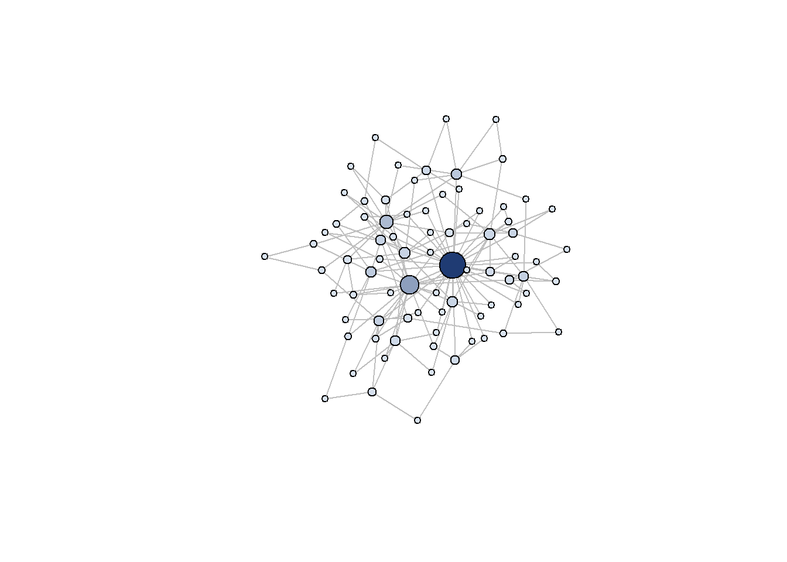
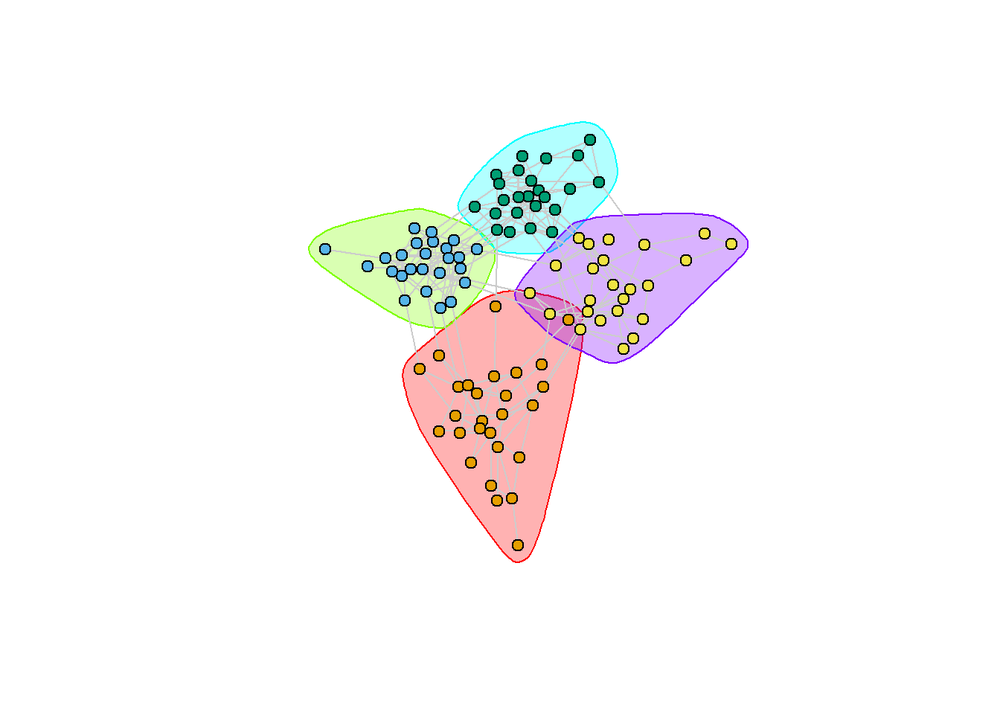
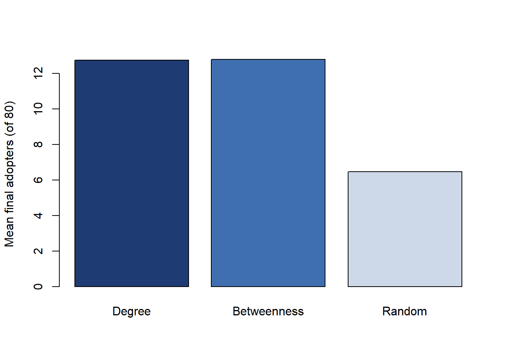

Most of the data structures the preceding chapters relied on are rectangular: a customer is a row, an attribute is a column, and rows are treated as exchangeable draws from a population. Network data violate that convenience at the root. The unit of analysis is not the isolated individual but the relation between individuals, and the informative quantity is the pattern of relations across the whole system. A customer who buys, adopts, churns, or recommends does so embedded in a web of friends, co-purchasers, followers, and referrers, and that embedding carries marketing signal that no amount of demographic enrichment recovers. The object that encodes this structure is a graph: a set of nodes (consumers, products, brands, sellers) and a set of edges (friendships, co-purchases, referrals, co-mentions) connecting them.
This chapter treats the graph as a first-class marketing data type, parallel to text (Chapter 38) and images (Chapter 40) in the unstructured-and- multimodal family. As with those modalities, the analytic arc is the same: an unstructured artifact (here, a relational structure rather than a document or a photo) is turned into machine-readable features, and those features are then used for description, prediction, or causal claims. And as with those modalities, the central econometric caution recurs in a network-specific and unusually severe form: a feature extracted from the graph, such as a node’s centrality or its neighbors’ behavior, is a generated regressor whose error is correlated with the outcome in ways that mimic the very effect the analyst wants to measure. The identification of social influence is the hardest version of this problem in all of empirical marketing, and it earns its own section below.
The chapter proceeds from use to method to practice. It opens with the marketing applications that motivate graph thinking. It then develops the formal representation of a graph and the centrality measures that summarize a node’s position, with a runnable igraph demonstration on simulated data. It treats community detection, the unsupervised discovery of cohesive subgroups. It then confronts the contagion-versus-homophily identification problem head on, because no honest account of network marketing can avoid it. It develops diffusion models and simulates an independent-cascade process over a graph. It surveys the learned- representation frontier, graph embeddings and graph neural networks, keeping the deep-learning specifics conceptual but clearly labeled. It closes with industry and production practice (recommendation, fraud, influencer selection) and a frontier section on where the field is moving.
43.1 Why Networks Matter in Marketing
The marketing relevance of graph structure is not a single idea but a family of them, unified by the premise that a consumer’s value, behavior, and reachability depend on the consumers around them.
Social networks, word of mouth, and contagion. The oldest motivation is that products spread through social ties. A consumer is more likely to adopt when adopters sit nearby in the social graph, whether because of genuine influence, shared exposure, or similarity. The word-of-mouth literature in marketing has long modeled this spread formally; Goldenberg, Libai, and Muller (2001) used a complex-systems simulation of the underlying person-to-person process to show how the structure of “weak” and “strong” ties governs the macro-level diffusion curve, and a large empirical literature, surveyed below, estimates contagion from observed adoption sequences over real ties. The contagion premise is also what makes misinformation a network phenomenon: Vosoughi, Roy, and Aral (2018) showed that false news diffuses faster, farther, and more broadly than true news through the Twitter retweet graph, a finding that is fundamentally about diffusion structure rather than content alone.
Co-purchase and recommendation graphs. A second, entirely different graph arises without any social tie at all. Connect two products when they are frequently bought together, or connect a customer to every product they purchased, and the resulting co-purchase (or bipartite customer-product) graph is the substrate of modern recommendation. “Customers who bought this also bought that” is a statement about the neighborhood of a node in a co-purchase graph, and item-to-item collaborative filtering, the algorithm that powered Amazon’s recommendations, is literally a computation over this graph (Linden, Smith and York 2003, IEEE Internet Computing 7(1), 76–80, doi:10.1109/MIC.2003.1167344). The graph here is a tool for prediction and retrieval, and the identification anxieties of the social-contagion literature are largely absent.
Customer-referral networks and seeding. Referral programs make the graph a managed asset: a firm rewards existing customers for recruiting new ones, and the chain of who-referred-whom is a directed network whose structure determines program value. The adjacent question, whom to seed with free product or early access to maximize spread, turns network position into a targeting variable. Hinz et al. (2011) compared seeding strategies empirically and found that seeding well-connected “hubs” outperforms seeding random or “fringe” customers, a result that operationalizes centrality as a marketing decision variable. The structure of referral and affiliate networks on the commercial web has itself been modeled as an outcome of strategic link formation by Katona and Sarvary (2008).
Influencer identification. Closely related is the problem of finding the individuals whose activity moves the system. The naive answer, “the most connected person,” is both intuitive and contested. Trusov, Bodapati, and Bucklin (2010) developed a method to identify genuinely influential users in an internet social network by modeling whose activity predicts others’ subsequent activity, distinguishing influence from mere connectedness. Watts and Dodds (2007) (Watts and Dodds 2007, Journal of Consumer Research 34(4), 441–458, doi:10.1086/518527) challenged the “influentials hypothesis” itself, arguing through simulation that large cascades are often driven by a critical mass of easily influenced ordinary people rather than by rare special individuals, a caution that remains central to how marketers should read centrality.
Brand co-mention and semantic networks. Finally, graphs need not connect people or products at all. Connect two brands when they are mentioned together in reviews, social posts, or search sessions, and the resulting co-mention network is a map of market structure: tightly connected brand clusters are competitive sets, and a brand’s position reveals its substitutes and complements. This is the network-analytic cousin of the text-mining market-structure maps discussed in Chapter 38, and it lets an analyst recover perceptual structure from unstructured co-occurrence rather than from surveys.
Across these applications the same primitive recurs: a position in a graph is a feature, and the configuration of the graph is information. The rest of the chapter develops the methods that turn that information into measures.
43.2 Graph Representation and Centrality
A graph \(G = (V, E)\) is a set of nodes \(V\) and a set of edges \(E \subseteq V \times V\). Edges may be undirected (a Facebook friendship is mutual) or directed (a Twitter follow is one-way; an A-referred-B link has an arrow), and they may be weighted (the number of co-purchases, the strength of a tie). The workhorse algebraic representation is the adjacency matrix\(A\), an \(n \times n\) matrix with \(A_{ij} = 1\) (or the edge weight) when an edge runs from \(i\) to \(j\) and \(0\) otherwise. Almost every structural quantity in this chapter is a function of \(A\). For sparse real-world graphs, where each node connects to a tiny fraction of all others, \(A\) is stored as an edge list rather than a dense matrix, but the mathematics is unchanged.
The most basic summary of a node is its degree, the number of edges incident to it (\(d_i = \sum_j A_{ij}\)). In a directed graph this splits into in-degree (how many point to \(i\); a proxy for received attention or popularity) and out-degree (how many \(i\) points to; a proxy for activity). Degree is the crudest notion of importance, and its crudeness is exactly the point of the richer centrality measures, each of which formalizes a different theory of what makes a node matter.
Betweenness centrality measures how often a node lies on shortest paths between other pairs of nodes: \[
C_B(i) = \sum_{s \ne i \ne t} \frac{\sigma_{st}(i)}{\sigma_{st}},
\tag{43.1}\] where \(\sigma_{st}\) is the number of shortest paths from \(s\) to \(t\) and \(\sigma_{st}(i)\) the number passing through \(i\). A high-betweenness node is a broker sitting on the bridges between otherwise separated regions; in marketing terms, a broker controls the flow of information across communities and is a candidate “weak tie” connector in the sense of the word-of-mouth literature.
Eigenvector centrality formalizes the recursive idea that a node is important if its neighbors are important. It is the leading eigenvector of the adjacency matrix: \[
A\,\mathbf{x} = \lambda_{\max}\,\mathbf{x},
\tag{43.2}\] so a node’s score is proportional to the sum of its neighbors’ scores. PageRank is a directed, damped variant of the same idea. Eigenvector centrality captures prestige: being connected to other well-connected nodes, not merely to many nodes. The three measures can disagree sharply, and the disagreement is informative. A node can have high degree but low betweenness (a popular member buried inside one tight cluster), or modest degree but high betweenness (a lone bridge between two cliques). Choosing a centrality measure is therefore choosing a theory of influence, not a neutral preprocessing step.
The runnable demonstration below builds a simulated graph and computes all three. The package is the maintained igraph, the standard for network analysis in R. The graph is generated by preferential attachment (the Barabási-Albert model), which produces the heavy-tailed degree distribution characteristic of real social and co-purchase networks: a few hubs and a long tail of sparsely connected nodes.
Code
library(igraph)set.seed(20260622)# --- Build a simulated scale-free network (Barabasi-Albert) ---# Interpretable as a social graph (who-follows-whom) or, with edges read as# "frequently bought together," a product co-purchase graph.g<-sample_pa(n =80, power =1.1, m =2, directed =FALSE)V(g)$name<-paste0("u", seq_len(vcount(g)))# --- Centrality measures (all functions of the adjacency structure) ---deg<-degree(g)btw<-betweenness(g, normalized =TRUE)eig<-eigen_centrality(g)$vectorcent<-data.frame( node =V(g)$name, degree =deg, betweenness =round(btw, 3), eigenvector =round(eig, 3))# Show the five highest-degree nodes and how they rank on the other measurestop_deg<-head(cent[order(-cent$degree), ], 5)cat("Top-5 nodes by degree:\n")#> Top-5 nodes by degree:print(top_deg, row.names =FALSE)#> node degree betweenness eigenvector#> u1 34 0.538 1.000#> u3 21 0.218 0.656#> u7 13 0.124 0.387#> u9 9 0.039 0.191#> u10 9 0.051 0.216# The top node by EACH measure can differ:cat("\nMost central node by measure:\n")#> #> Most central node by measure:cat(" degree :", cent$node[which.max(cent$degree)], "\n")#> degree : u1cat(" betweenness:", cent$node[which.max(cent$betweenness)], "\n")#> betweenness: u1cat(" eigenvector:", cent$node[which.max(cent$eigenvector)], "\n")#> eigenvector: u1# Rank correlation between degree and betweenness: high but not 1,# which is exactly why brokers and hubs are distinct managerial targets.cat("\nSpearman corr(degree, betweenness):",round(cor(deg, btw, method ="spearman"), 3), "\n")#> #> Spearman corr(degree, betweenness): 0.869# --- Visualize ---node_col<-colorRampPalette(c("#d9e3f0", "#1f3b73"))(100)[as.integer(cut(btw, breaks =100, include.lowest =TRUE))]plot(g, vertex.size =4+14*(deg/max(deg)), vertex.color =node_col, vertex.label =NA, edge.color ="grey75", layout =layout_with_fr(g))

A simulated scale-free social/co-purchase graph of 80 nodes generated by preferential attachment. Node size is proportional to degree; color encodes betweenness (darker = higher). The hubs (large nodes) and the brokers (dark nodes) are not always the same vertices, which is the practical point of distinguishing centrality measures.
The output makes the conceptual point operational. The Spearman correlation between degree and betweenness is high but well below one, and the single most central node differs across measures. A seeding or influencer program that targets “the most connected user” is implicitly committing to the degree theory of influence; if the real mechanism is brokerage across communities, betweenness is the right target, and the two will recommend different people.
43.3 Community Detection
Real marketing graphs are not homogeneous. They decompose into communities: subgroups of nodes more densely connected to one another than to the rest of the graph. In a social network communities are friend groups, demographic clusters, or interest tribes; in a co-purchase graph they are product categories or use-occasion bundles; in a brand co-mention graph they are competitive sets. Detecting communities is an unsupervised problem analogous to clustering or topic modeling, and it serves the same ends: segmentation, market-structure mapping, and the construction of group-level features.
The dominant family of methods maximizes modularity, a score that compares the fraction of edges falling within proposed communities to the fraction expected if edges were placed at random while preserving the degree sequence: \[
Q = \frac{1}{2m} \sum_{i,j} \left( A_{ij} - \frac{d_i d_j}{2m} \right) \delta(c_i, c_j),
\tag{43.3}\] where \(m\) is the number of edges, \(d_i\) is node \(i\)’s degree, \(c_i\) is its assigned community, and \(\delta\) is one when two nodes share a community and zero otherwise. High modularity means communities capture far more internal edge density than chance. The Louvain algorithm (Blondel, Guillaume, Lambiotte and Lefebvre 2008, Journal of Statistical Mechanics P10008, doi:10.1088/1742-5468/2008/10/P10008) greedily and hierarchically optimizes modularity and scales to graphs with millions of nodes, which made it the field standard. Its successor, the Leiden algorithm (Traag, Waltman and van Eck 2019, Scientific Reports 9, 5233, doi:10.1038/s41598-019-41695-z), repairs a known defect in Louvain, that it can produce internally disconnected communities, and is now the recommended default. Both are exposed in igraph through the cluster_* family.
Code
library(igraph)set.seed(20260622)# --- Simulate a graph with PLANTED community structure ---# Stochastic block model: 4 blocks (think 4 customer tribes / 4 product# categories) with high within-block and low between-block edge probability.block_sizes<-c(25, 25, 25, 25)p_within<-0.18p_between<-0.01pref<-matrix(p_between, nrow =4, ncol =4)diag(pref)<-p_withingsbm<-sample_sbm(n =sum(block_sizes), pref.matrix =pref, block.sizes =block_sizes)# --- Louvain community detection (modularity maximization) ---comm_louvain<-cluster_louvain(gsbm)cat("Number of communities found:", length(comm_louvain), "\n")#> Number of communities found: 4cat("Community sizes:", paste(sizes(comm_louvain), collapse =", "), "\n")#> Community sizes: 27, 25, 24, 24cat("Modularity Q:", round(modularity(comm_louvain), 3), "\n")#> Modularity Q: 0.632# Leiden is available in recent igraph; fall back to Louvain if not present,# so the chapter renders across versions.leiden_ok<-"cluster_leiden"%in%ls("package:igraph")if(leiden_ok){comm_leiden<-cluster_leiden(gsbm, objective_function ="modularity")cat("Leiden communities:", length(unique(membership(comm_leiden))), "\n")}#> Leiden communities: 4# --- Visualize the Louvain partition ---plot(comm_louvain, gsbm, vertex.size =6, vertex.label =NA, edge.color ="grey80", layout =layout_with_fr(gsbm))

Community structure of a simulated graph with planted groups. Nodes are colored by detected community. The Louvain partition recovers the dense subgroups; modularity quantifies how much denser within-community ties are than chance.
A modularity score comfortably above zero (values around 0.3 to 0.7 are typical of clear community structure) confirms that the detected partition captures genuine density rather than noise. The marketing payoff is that the community label is now a feature: it can segment a campaign, define a competitive set, or, as the next section warns, serve as a (dangerous) proxy for the shared environment that confounds influence estimation.
43.4 Contagion, Homophily, and the Identification Challenge
The most consequential marketing question one can ask of a network is causal: does a consumer adopt because their neighbors adopted? If yes, the firm can engineer cascades by seeding well-chosen nodes; if no, network targeting buys nothing beyond ordinary lookalike targeting. This is also the question on which naive analysis fails most spectacularly, and the failure has a precise structure.
Observed clustering of behavior in a network has at least three distinct generators that are observationally similar in cross-sectional data. Contagion (or induction, influence) is the causal mechanism of interest: \(i\)’s adoption changes \(j\)’s adoption probability. Homophily is selection on similarity: \(i\) and \(j\) are connected because they were already alike, so they adopt the same things for reasons that predate and have nothing to do with the tie. Common external shocks (correlated environment) are exposures shared by connected nodes, such as a local promotion, a weather event, or a price change, that hit neighborhoods together. All three produce the same surface pattern, that adoption is correlated across edges, yet only the first justifies network-based seeding.
The econometric core of the difficulty is the reflection problem named by Manski (Manski 1993, Review of Economic Studies 60(3), 531–542, doi:10.2307/2298123). If each person’s behavior depends on the average behavior of their reference group, and the reference group’s behavior simultaneously depends on each person’s, then the endogenous social effect (true contagion), the exogenous or contextual effect (the group’s characteristics), and correlated effects (shared environment) cannot in general be separated from a single cross-section: the regressors reflect each other. Manski’s result is a statement that the data, not merely the estimator, are uninformative about the decomposition without further structure.
Two routes restore identification. The first is experimental: randomize the treatment that is supposed to spread, breaking the link between a node’s exposure and its pre-existing similarity to its neighbors. The cleanest marketing demonstrations are randomized field experiments. Aral and Walker (2011, Management Science 57(9), 1623–1639, doi:10.1287/mnsc.1110.1421) randomized viral product-design features inside a Facebook app and so measured peer influence free of homophily; in a companion study, Aral and Walker (2012, Science 337(6092), 337–341, doi:10.1126/science.1215842) identified influential and susceptible individuals by exploiting that randomization, showing that influence and susceptibility are distinct traits and that the most influential are not the most susceptible. Bapna and Umyarov (2015, Management Science 61(8), 1902–1920, doi:10.1287/mnsc.2014.2059) ran a randomized field experiment gifting premium subscriptions in a music social network and recovered a clean causal peer-influence estimate, finding it substantial but far below naive observational figures. Centola (2010, Science 329(5996), 1194–1197, doi:10.1126/science.1185231) built artificial online networks with randomly assigned topologies and showed that health behavior spread farther and faster in clustered networks than in random ones, evidence for complex contagion, where adoption requires reinforcement from multiple sources rather than a single contact. The complex-contagion finding directly qualifies seeding advice: if reinforcement is needed, scattering seeds to maximize reach can be worse than concentrating them to manufacture local density.
The second route is observational with structure. When experiments are infeasible, identification can sometimes be recovered from the architecture of the network itself. Bramoullé, Djebbari and Fortin (2009, Journal of Econometrics 150(1), 41–55, doi:10.1016/j.jeconom.2008.12.021) showed that when the network contains intransitive triads (friends of friends who are not themselves friends), the characteristics of those second-degree-only contacts serve as instruments that break the reflection problem, partially identifying endogenous from contextual effects. Within marketing, Iyengar, Van den Bulte, and Lee (2015) separated the roles of opinion leadership and susceptibility in new-product trial and repeat, and Iyengar, Ansari, and Gupta (2003) and the broader contagion literature deploy timing, panel structure, and dynamic models to argue that influence, not merely similarity, drives observed clustering. Peng et al. (2018) exploited network overlap, the extent to which two users share common friends, to study content sharing, a structural feature that itself shapes diffusion.
The discipline this section imposes is non-negotiable. A centrality score, a community label, or a “fraction of neighbors who adopted” is a generated regressor saturated with homophily and shared-environment variance. Reporting its coefficient as social influence is the network analogue of the generated-regressor error that recurs throughout the unstructured-data chapters, and here it is at its most seductive because the story, “my friends made me do it,” is so plausible. The credible default is to treat any observational network-effect estimate as an upper bound and to reach for randomization, a structural model, or an architecture-based instrument before making a causal claim.
43.5 Diffusion and the Independent-Cascade Process
Whether or not contagion is cleanly identified, marketers need models of how something spreads over a fixed graph, both to forecast a campaign’s reach and to choose seeds. Two classical families dominate. In the independent cascade model, each newly activated node gets a single chance to activate each not-yet-active neighbor, succeeding with an edge-specific probability \(p_{ij}\); activation is a one-shot push along each edge. In the linear threshold model, each node activates once the weighted fraction of its already-active neighbors crosses a node-specific threshold, which is the discrete analogue of the complex-contagion reinforcement Centola observed. Both nest the aggregate-level Bass diffusion logic of Goldenberg, Libai, and Muller (2001) at the micro, edge-by-edge level.
These micro-models are also the substrate of influence maximization, the combinatorial problem of choosing a seed set of size \(k\) that maximizes expected eventual adoption. Kempe, Kleinberg and Tardos (2003, Proc. 9th ACM SIGKDD, 137–146, doi:10.1145/956750.956769) proved that expected spread under both models is a submodular (diminishing-returns) function of the seed set, so a simple greedy algorithm, repeatedly adding the node with the largest marginal gain, achieves a spread within a \((1 - 1/e) \approx 63\%\) factor of the optimum. This is the theoretical backbone of principled seeding and the formal counterpart to the empirical seeding comparisons in Hinz et al. (2011).
The simulation below runs an independent-cascade process over the scale-free graph from the centrality section and compares three seeding rules, highest-degree, highest- betweenness, and random, by Monte Carlo over many cascade realizations. It is a small, self-contained, genuinely running implementation.
Code
library(igraph)set.seed(20260622)g<-sample_pa(n =80, power =1.1, m =2, directed =FALSE)A<-as_adjacency_matrix(g, sparse =FALSE)n<-vcount(g)# --- One independent-cascade realization from a given seed set ---# Each active node gets ONE chance to activate each inactive neighbor,# succeeding with probability p along that edge.ic_spread<-function(adj, seeds, p=0.12){active<-rep(FALSE, nrow(adj)); active[seeds]<-TRUEfrontier<-seedswhile(length(frontier)>0){new_active<-integer(0)for(uinfrontier){nbrs<-which(adj[u, ]==1&!active)if(length(nbrs)>0){success<-nbrs[runif(length(nbrs))<p]new_active<-c(new_active, success)}}new_active<-unique(new_active)active[new_active]<-TRUEfrontier<-new_active}sum(active)}# --- Monte Carlo: mean spread for each seeding rule ---mc_spread<-function(seeds, reps=200, p=0.12){mean(replicate(reps, ic_spread(A, seeds, p)))}k<-3# seed-set sizedeg<-degree(g)btw<-betweenness(g)seeds_degree<-order(deg, decreasing =TRUE)[1:k]seeds_betw<-order(btw, decreasing =TRUE)[1:k]set.seed(101)seeds_random<-sample(seq_len(n), k)results<-c( Degree =mc_spread(seeds_degree), Betweenness =mc_spread(seeds_betw), Random =mc_spread(seeds_random))cat("Mean final adopters out of", n, "nodes (k =", k, "seeds, 200 sims):\n")#> Mean final adopters out of 80 nodes (k = 3 seeds, 200 sims):print(round(results, 1))#> Degree Betweenness Random #> 12.7 12.8 6.5barplot(results, ylab ="Mean final adopters (of 80)", col =c("#1f3b73", "#3f6fb0", "#cdd8e8"), main ="")

Independent-cascade diffusion over a simulated scale-free graph. Each bar is the mean final number of adopters (out of 80 nodes) across 200 cascade simulations, for three seeding rules with the same seed-set size. Degree- and betweenness-based seeding outperform random seeding, the simulated counterpart of the empirical ‘seed the hubs’ result.
The simulation reproduces the qualitative seeding result in a controlled setting: targeting high-centrality nodes meaningfully outperforms random seeding for the same budget, because hubs reach more of the graph before the cascade dies. The size of the advantage depends on the activation probability \(p\) and the network topology, and the reader is invited to vary both. The honest caveat is that this gain is a property of the assumed contagion process; whether it materializes in a real campaign returns us to the identification problem of the previous section, since a process that is mostly homophily will not respond to seeding at all.
43.6 Graph Embeddings and Graph Neural Networks
Centrality and community labels are hand-designed features. The learned-representation revolution that reshaped text and image analysis has a direct counterpart for graphs: methods that learn a low-dimensional vector for each node such that nodes close in the graph are close in the vector space, after which the vectors feed any ordinary downstream model (a churn classifier, a recommender, a link predictor). The conceptual move mirrors word embeddings exactly, with random walks on the graph playing the role that sentences play in text.
Random-walk embeddings. The foundational methods generate many random walks from each node, treat each walk as a “sentence” of node IDs, and run a word2vec-style skip-gram model so that nodes appearing in the same walks receive similar vectors. DeepWalk (Perozzi, Al-Rfou and Skiena 2014, Proc. 20th ACM SIGKDD, 701–710, doi:10.1145/2623330.2623732) introduced this idea. node2vec (Grover and Leskovec 2016, Proc. 22nd ACM SIGKDD, 855–864, doi:10.1145/2939672.2939754) generalized it with biased random walks whose two parameters interpolate between breadth-first exploration, which captures structural-role similarity such as “both are hubs,” and depth-first exploration, which captures community proximity. The practical value for marketing is that a single 64- or 128-dimensional node vector compresses a consumer’s entire relational position into a feature usable in standard pipelines, sidestepping the need to pre-commit to degree versus betweenness versus community as the relevant summary.
Graph neural networks (conceptual). The following is a conceptual description; the heavy deep-learning machinery and its training are beyond this chapter’s runnable scope and are flagged as such. Graph neural networks (GNNs) generalize embeddings from a fixed lookup table to a learned function of node and edge attributes. The core operation is neighborhood aggregation (message passing): each node updates its representation by combining its own features with a permutation-invariant aggregate (sum, mean, or attention-weighted average) of its neighbors’ representations, and stacking \(L\) such layers lets information flow from \(L\) hops away. The graph convolutional network formulates this as a spectral-motivated averaging over neighbors (Kipf and Welling, “Semi-Supervised Classification with Graph Convolutional Networks,” ICLR 2017, cited by name; no canonical Crossref DOI). GraphSAGE (Hamilton, Ying and Leskovec, “Inductive Representation Learning on Large Graphs,” NeurIPS 2017, cited by name; no canonical Crossref DOI) made the scheme inductive, learning an aggregation function that generalizes to nodes unseen at training time, which is essential when the customer graph grows daily. Graph attention networks weight neighbors by learned attention rather than treating them uniformly. The marketing relevance is that GNNs jointly exploit graph structure and node attributes (a customer’s demographics, a product’s category) in a single supervised objective, which is why they now underpin large-scale industrial recommendation and fraud systems.
The standard caution applies with full force to learned representations. A node embedding is a generated feature, and its proximity structure encodes homophily and shared environment along with whatever genuine influence exists. Using embeddings to predict (who will churn, what to recommend) is on firm ground; using an embedding coordinate as a regressor in a causal claim about social influence reintroduces every hazard of Section 43.4 in a less transparent form.
43.7 Industry and Production Practice
In production systems, graph methods are deployed overwhelmingly for prediction and ranking, where the identification anxieties recede and the engineering challenges of scale, latency, and freshness dominate.
Recommendation. The co-purchase and user-item interaction graph is the oldest and largest commercial application. Item-to-item collaborative filtering computes, for each item, the items most co-purchased or co-viewed with it, precisely the neighborhood structure of the co-purchase graph, and serves them as “related items” (Linden, Smith and York 2003, doi:10.1109/MIC.2003.1167344). Modern systems replace hand-built similarity with learned node embeddings or GNNs over the bipartite user-item graph, and graph-based candidate generation is now standard at web scale. Because the objective is relevance rather than a causal effect, the right evaluation is held-out predictive ranking (precision-at-k, recall, NDCG), not a structural parameter.
Fraud and abuse detection. Fraud is intrinsically relational: fraudulent accounts collude, share devices and payment instruments, and form dense, anomalous subgraphs that look nothing like organic user clusters. Community detection surfaces suspiciously tight rings; centrality and guilt-by-association propagation spread suspicion from known-bad nodes to their neighbors; and GNNs trained on labeled fraud generalize these signals. The same machinery flags fake reviews, click farms, and bot-driven engagement, which directly protects the integrity of the word-of-mouth and influencer signals that the rest of marketing relies upon.
Influencer selection. Brands choosing influencers operationalize the centrality and seeding ideas of this chapter, but production practice is more skeptical of raw reach than the naive theory. Follower count is in-degree, the crudest centrality, and is easily inflated by bots and cheaply purchased. Practitioners increasingly weight engagement (whether the audience acts), audience overlap (whether two influencers reach the same people, a network-overlap consideration in the spirit of Peng et al. (2018)), and authenticity, all of which are graph- and behavior-based rather than reach-based. The Watts and Dodds (2007) caution, that ordinary susceptible audiences often matter more than rare special individuals, and the Trusov, Bodapati, and Bucklin (2010) distinction between activity-driving influence and mere connectedness, are the academic backbone of this more nuanced practice. The video-advertising and platform chapters (Chapter 51) develop the influencer economy in its own right; here the point is narrowly that selection is a network-position problem dressed in marketing clothes.
A cross-cutting production reality is that these graphs are enormous, dynamic, and often privacy-sensitive. The relevant edges, who is friends with whom, who bought with whom, may be governed by consent and platform policy, and the analyst’s access to the true graph is partial and changing. Methods that are inductive (generalizing to new nodes), incremental (updating without full recomputation), and robust to missing edges are favored not for elegance but for survival in deployment.
43.8 The Frontier
Several directions are actively expanding what network data can do for marketing.
Causal inference on networks is the most consequential. The field is moving beyond the simple contagion-versus-homophily dichotomy toward formal treatment of interference and spillovers, the fact that in a connected population the stable-unit-treatment-value assumption fails because one unit’s treatment affects another’s outcome. Designing experiments that measure spillovers rather than assuming them away, through cluster-randomized, graph-cluster, and ego-network designs, is an area where marketing, platform experimentation, and econometrics are converging, and it is the natural extension of the identification discipline in Section 43.4.
Dynamic and temporal graphs treat edges as events with timestamps rather than a static snapshot, letting models capture when a tie forms or fires, which is exactly the information diffusion and influence estimation most need. Temporal GNNs and point-process models over interaction streams are the methodological frontier here.
Exponential random graph models (ERGMs) model the network itself as the outcome, specifying the probability of an observed graph as a function of local configurations (edges, reciprocated ties, triangles, homophily terms), and so let an analyst test why ties form, for example whether brand co-mentions cluster by category beyond chance. The mature ergm software (Hunter, Handcock, Butts, Goodreau and Morris 2008, Journal of Statistical Software 24(3), doi:10.18637/jss.v024.i03) makes these models estimable, and they are the right tool when link formation, rather than node behavior, is the question, complementing the strategic link-formation models of Katona and Sarvary (2008).
Multimodal graphs fuse the relational structure of this chapter with the text, image, and behavioral modalities of its sibling chapters: nodes carry text and image attributes, edges carry interaction content, and the joint object is modeled with attributed GNNs. This is where network data rejoins the broader unstructured-and- multimodal program, and where the generated-feature caution must be enforced across all modalities at once. The unifying thesis of the part holds here without exception: a graph, like a document or a photograph, becomes a learned, lossy feature vector, and that vector is a generated regressor whose error may correlate with the outcome the analyst is trying to explain.
43.9 Summary
Network data make the relation the unit of analysis. A node’s position in a graph is a marketing feature, and the configuration of the graph is information that rectangular data cannot recover.
The applications span social contagion and word of mouth, co-purchase and recommendation graphs, customer-referral and seeding networks, influencer identification, and brand co-mention market-structure maps.
Centrality measures (degree, betweenness, eigenvector) each formalize a different theory of which node matters, and they can disagree; choosing one is choosing a theory of influence, as the runnable igraph demonstration shows.
Community detection via modularity maximization (Louvain, Leiden) recovers cohesive subgroups usable as segments, competitive sets, or group-level features.
The contagion-versus-homophily identification problem, formalized by Manski’s reflection problem, is the hardest causal problem in network marketing; credible answers require randomization, architecture-based instruments, or structural models, and observational network-effect estimates should be read as upper bounds.
Diffusion models (independent cascade, linear threshold) and the submodularity of influence spread justify principled seeding; the simulation confirms that centrality- based seeding beats random seeding under an assumed contagion process.
Graph embeddings (DeepWalk, node2vec) and graph neural networks learn node representations that power production recommendation and fraud systems, but a learned embedding is a generated feature carrying the same causal hazards in less transparent form.
In production, graphs serve recommendation, fraud detection, and influencer selection, where prediction quality and scale dominate; the frontier is causal inference under interference, temporal graphs, ERGMs for link formation, and multimodal attributed graphs.
43.10 Further Reading
The word-of-mouth and social-contagion foundations in marketing are developed in Goldenberg, Libai, and Muller (2001), Godes and Mayzlin (2004), and Godes and Mayzlin (2009), with the seeding and influence-targeting strand in Hinz et al. (2011), Trusov, Bucklin, and Pauwels (2009), Trusov, Bodapati, and Bucklin (2010), and Iyengar, Van den Bulte, and Lee (2015). The strategic formation of commercial networks is treated in Katona and Sarvary (2008), network-structure effects on idea generation in Stephen, Zubcsek, and Goldenberg (2016), and network overlap and diffusion in Peng et al. (2018). The misinformation-as-diffusion case is Vosoughi, Roy, and Aral (2018). For the identification machinery, the canonical references cited by verified DOI in the text are Manski (1993) on the reflection problem, Bramoullé, Djebbari and Fortin (2009) on identification through network architecture, and the randomized-experiment line of Aral and Walker (2011, 2012), Bapna and Umyarov (2015), and Centola (2010); the homophily concept traces to McPherson, Smith-Lovin and Cook (2001, Annual Review of Sociology 27, 415–444, doi:10.1146/annurev.soc.27.1.415). The methods substrate, community detection (Blondel et al. 2008; Traag et al. 2019), influence maximization (Kempe, Kleinberg and Tardos 2003), graph embeddings (Perozzi et al. 2014; Grover and Leskovec 2016), graph neural networks (Kipf and Welling 2017; Hamilton, Ying and Leskovec 2017, both cited by name), ERGMs (Hunter et al. 2008), and the Amazon item-to-item recommender (Linden, Smith and York 2003), is referenced inline with verified DOIs where a canonical Crossref DOI exists. This chapter sits alongside the text (Chapter 38) and image (Chapter 40) treatments in the unstructured-and-multimodal family, and its platform and influencer-economy context is developed in Chapter 51.
Godes, David, and Dina Mayzlin. 2004. “Using Online Conversations to Study Word-of-Mouth Communication.”Marketing Science 23 (4): 545–60. https://doi.org/10.1287/mksc.1040.0071.
———. 2009. “Firm-Created Word-of-Mouth Communication: Evidence from a Field Test.”Marketing Science 28 (4): 721–39. https://doi.org/10.1287/mksc.1080.0444.
Goldenberg, Jacob, Barak Libai, and Eitan Muller. 2001. “Talk of the Network: A Complex Systems Look at the Underlying Process of Word-of-Mouth.”Marketing Letters 12 (3): 211–23.
Hinz, Oliver, Bernd Skiera, Christian Barrot, and Jan U. Becker. 2011. “Seeding Strategies for Viral Marketing: An Empirical Comparison.”Journal of Marketing 75 (6): 55–71. https://doi.org/10.1509/jm.10.0088.
Iyengar, Raghuram, Asim Ansari, and Sunil Gupta. 2003. “Leveraging Information Across Categories.”Quantitative Marketing and Economics 1 (4): 425–65. https://doi.org/10.1023/b:qmec.0000004845.25649.6c.
Iyengar, Raghuram, Christophe Van den Bulte, and Jae Young Lee. 2015. “Social Contagion in New Product Trial and Repeat.”Marketing Science 34 (3): 408–29. https://doi.org/10.1287/mksc.2014.0888.
Katona, Zsolt, and Miklos Sarvary. 2008. “Network Formation and the Structure of the Commercial World Wide Web.”Marketing Science 27 (5): 764–78. https://doi.org/10.1287/mksc.1070.0349.
Peng, Jing, Ashish Agarwal, Kartik Hosanagar, and Raghuram Iyengar. 2018. “Network Overlap and Content Sharing on Social Media Platforms.”Journal of Marketing Research 55 (4): 571–85. https://doi.org/10.1509/jmr.14.0643.
Stephen, Andrew T., Peter Pal Zubcsek, and Jacob Goldenberg. 2016. “Lower Connectivity Is Better: The Effects of Network Structure on Redundancy of Ideas and Customer Innovativeness in Interdependent Ideation Tasks.”Journal of Marketing Research 53 (2): 263–79. https://doi.org/10.1509/jmr.13.0127.
Trusov, Michael, Anand V. Bodapati, and Randolph E. Bucklin. 2010. “Determining Influential Users in Internet Social Networks.”Journal of Marketing Research 47 (4): 643–58. https://doi.org/10.1509/jmkr.47.4.643.
Trusov, Michael, Randolph E. Bucklin, and Koen Pauwels. 2009. “Effects of Word-of-Mouth Versus Traditional Marketing: Findings from an Internet Social Networking Site.”Journal of Marketing 73 (5): 90–102. https://doi.org/10.1509/jmkg.73.5.90.
Vosoughi, Soroush, Deb Roy, and Sinan Aral. 2018. “The Spread of True and False News Online.”Science 359 (6380): 1146–51. https://doi.org/10.1126/science.aap9559.
Watts, Duncan J., and Peter Sheridan Dodds. 2007. “Influentials, Networks, and Public Opinion Formation.”Journal of Consumer Research 34 (4): 441–58. https://doi.org/10.1086/518527.
Source Code
# Networks and Graph Data {#sec-network-graph}Most of the data structures the preceding chapters relied on are *rectangular*: acustomer is a row, an attribute is a column, and rows are treated as exchangeable drawsfrom a population. Network data violate that convenience at the root. The unit ofanalysis is not the isolated individual but the *relation* between individuals, and theinformative quantity is the pattern of relations across the whole system. A customerwho buys, adopts, churns, or recommends does so embedded in a web of friends,co-purchasers, followers, and referrers, and that embedding carries marketing signalthat no amount of demographic enrichment recovers. The object that encodes thisstructure is a **graph**: a set of *nodes* (consumers, products, brands, sellers) and aset of *edges* (friendships, co-purchases, referrals, co-mentions) connecting them.This chapter treats the graph as a first-class marketing data type, parallel to text(@sec-text-as-data) and images (@sec-image-processing) in the unstructured-and-multimodal family. As with those modalities, the analytic arc is the same: anunstructured artifact (here, a relational structure rather than a document or a photo)is turned into machine-readable features, and those features are then used fordescription, prediction, or causal claims. And as with those modalities, the centraleconometric caution recurs in a network-specific and unusually severe form: a featureextracted from the graph, such as a node's centrality or its neighbors' behavior, is a*generated regressor* whose error is correlated with the outcome in ways that mimic thevery effect the analyst wants to measure. The identification of social influence is thehardest version of this problem in all of empirical marketing, and it earns its ownsection below.The chapter proceeds from use to method to practice. It opens with the marketing*applications* that motivate graph thinking. It then develops the formal*representation* of a graph and the *centrality* measures that summarize a node'sposition, with a runnable `igraph` demonstration on simulated data. It treats*community detection*, the unsupervised discovery of cohesive subgroups. It thenconfronts the *contagion-versus-homophily* identification problem head on, because nohonest account of network marketing can avoid it. It develops *diffusion* models andsimulates an independent-cascade process over a graph. It surveys the learned-representation frontier, *graph embeddings* and *graph neural networks*, keeping thedeep-learning specifics conceptual but clearly labeled. It closes with *industry andproduction* practice (recommendation, fraud, influencer selection) and a *frontier*section on where the field is moving.## Why Networks Matter in Marketing {#sec-graph-applications}The marketing relevance of graph structure is not a single idea but a family of them,unified by the premise that a consumer's value, behavior, and reachability depend onthe consumers around them.**Social networks, word of mouth, and contagion.** The oldest motivation is thatproducts spread through social ties. A consumer is more likely to adopt when adopterssit nearby in the social graph, whether because of genuine influence, shared exposure,or similarity. The word-of-mouth literature in marketing has long modeled this spreadformally; @goldenberg2001 used a complex-systems simulation of the underlyingperson-to-person process to show how the structure of "weak" and "strong" ties governsthe macro-level diffusion curve, and a large empirical literature, surveyed below,estimates contagion from observed adoption sequences over real ties. The contagionpremise is also what makes *misinformation* a network phenomenon: @vosoughi2018 showedthat false news diffuses faster, farther, and more broadly than true news through theTwitter retweet graph, a finding that is fundamentally about diffusion structure ratherthan content alone.**Co-purchase and recommendation graphs.** A second, entirely different graph ariseswithout any social tie at all. Connect two products when they are frequently boughttogether, or connect a customer to every product they purchased, and the resultingco-purchase (or bipartite customer-product) graph is the substrate of modernrecommendation. "Customers who bought this also bought that" is a statement about theneighborhood of a node in a co-purchase graph, and item-to-item collaborativefiltering, the algorithm that powered Amazon's recommendations, is literally acomputation over this graph (Linden, Smith and York 2003, *IEEE Internet Computing*7(1), 76--80, doi:10.1109/MIC.2003.1167344). The graph here is a tool for *predictionand retrieval*, and the identification anxieties of the social-contagion literature arelargely absent.**Customer-referral networks and seeding.** Referral programs make the graph a managedasset: a firm rewards existing customers for recruiting new ones, and the chain ofwho-referred-whom is a directed network whose structure determines program value. Theadjacent question, *whom to seed* with free product or early access to maximize spread,turns network position into a targeting variable. @hinz2011 compared seeding strategiesempirically and found that seeding well-connected "hubs" outperforms seeding random or"fringe" customers, a result that operationalizes centrality as a marketing decisionvariable. The structure of referral and affiliate networks on the commercial web hasitself been modeled as an outcome of strategic link formation by @katona2008.**Influencer identification.** Closely related is the problem of finding theindividuals whose activity moves the system. The naive answer, "the most connectedperson," is both intuitive and contested. @trusov2010 developed a method to identifygenuinely influential users in an internet social network by modeling whose activitypredicts others' subsequent activity, distinguishing influence from mere connectedness.@watts2007influentials (Watts and Dodds 2007, *Journal of Consumer Research* 34(4),441--458, doi:10.1086/518527) challenged the "influentials hypothesis" itself,arguing through simulation that large cascades are often driven by a critical mass ofeasily influenced ordinary people rather than by rare special individuals, a cautionthat remains central to how marketers should read centrality.**Brand co-mention and semantic networks.** Finally, graphs need not connect people orproducts at all. Connect two brands when they are mentioned together in reviews, socialposts, or search sessions, and the resulting co-mention network is a map of *marketstructure*: tightly connected brand clusters are competitive sets, and a brand'sposition reveals its substitutes and complements. This is the network-analytic cousinof the text-mining market-structure maps discussed in @sec-text-as-data, and it lets ananalyst recover perceptual structure from unstructured co-occurrence rather than fromsurveys.Across these applications the same primitive recurs: a position in a graph is afeature, and the configuration of the graph is information. The rest of the chapterdevelops the methods that turn that information into measures.## Graph Representation and Centrality {#sec-graph-centrality}A graph $G = (V, E)$ is a set of nodes $V$ and a set of edges $E \subseteq V \times V$.Edges may be **undirected** (a Facebook friendship is mutual) or **directed** (aTwitter follow is one-way; an A-referred-B link has an arrow), and they may be**weighted** (the number of co-purchases, the strength of a tie). The workhorsealgebraic representation is the **adjacency matrix** $A$, an $n \times n$ matrix with$A_{ij} = 1$ (or the edge weight) when an edge runs from $i$ to $j$ and $0$ otherwise.Almost every structural quantity in this chapter is a function of $A$. For sparsereal-world graphs, where each node connects to a tiny fraction of all others, $A$ isstored as an edge list rather than a dense matrix, but the mathematics is unchanged.The most basic summary of a node is its **degree**, the number of edges incident to it($d_i = \sum_j A_{ij}$). In a directed graph this splits into *in-degree* (how manypoint to $i$; a proxy for received attention or popularity) and *out-degree* (how many$i$ points to; a proxy for activity). Degree is the crudest notion of importance, andits crudeness is exactly the point of the richer **centrality** measures, each of whichformalizes a different theory of what makes a node matter.**Betweenness centrality** measures how often a node lies on shortest paths betweenother pairs of nodes:$$C_B(i) = \sum_{s \ne i \ne t} \frac{\sigma_{st}(i)}{\sigma_{st}},$$ {#eq-graph-betweenness}where $\sigma_{st}$ is the number of shortest paths from $s$ to $t$ and$\sigma_{st}(i)$ the number passing through $i$. A high-betweenness node is a *broker*sitting on the bridges between otherwise separated regions; in marketing terms, abroker controls the flow of information across communities and is a candidate "weak tie"connector in the sense of the word-of-mouth literature.**Eigenvector centrality** formalizes the recursive idea that a node is important if itsneighbors are important. It is the leading eigenvector of the adjacency matrix:$$A\,\mathbf{x} = \lambda_{\max}\,\mathbf{x},$$ {#eq-graph-eigenvector}so a node's score is proportional to the sum of its neighbors' scores. PageRank is adirected, damped variant of the same idea. Eigenvector centrality captures *prestige*:being connected to other well-connected nodes, not merely to many nodes. The threemeasures can disagree sharply, and the disagreement is informative. A node can havehigh degree but low betweenness (a popular member buried inside one tight cluster), ormodest degree but high betweenness (a lone bridge between two cliques). Choosing acentrality measure is therefore choosing a theory of influence, not a neutralpreprocessing step.The runnable demonstration below builds a simulated graph and computes all three. Thepackage is the maintained `igraph`, the standard for network analysis in R. The graphis generated by *preferential attachment* (the Barabási-Albert model), which producesthe heavy-tailed degree distribution characteristic of real social and co-purchasenetworks: a few hubs and a long tail of sparsely connected nodes.```{r graph-centrality, message=FALSE, warning=FALSE}#| fig-cap: "A simulated scale-free social/co-purchase graph of 80 nodes generated by preferential attachment. Node size is proportional to degree; color encodes betweenness (darker = higher). The hubs (large nodes) and the brokers (dark nodes) are not always the same vertices, which is the practical point of distinguishing centrality measures."library(igraph)set.seed(20260622)# --- Build a simulated scale-free network (Barabasi-Albert) ---# Interpretable as a social graph (who-follows-whom) or, with edges read as# "frequently bought together," a product co-purchase graph.g <-sample_pa(n =80, power =1.1, m =2, directed =FALSE)V(g)$name <-paste0("u", seq_len(vcount(g)))# --- Centrality measures (all functions of the adjacency structure) ---deg <-degree(g)btw <-betweenness(g, normalized =TRUE)eig <-eigen_centrality(g)$vectorcent <-data.frame(node =V(g)$name,degree = deg,betweenness =round(btw, 3),eigenvector =round(eig, 3))# Show the five highest-degree nodes and how they rank on the other measurestop_deg <-head(cent[order(-cent$degree), ], 5)cat("Top-5 nodes by degree:\n")print(top_deg, row.names =FALSE)# The top node by EACH measure can differ:cat("\nMost central node by measure:\n")cat(" degree :", cent$node[which.max(cent$degree)], "\n")cat(" betweenness:", cent$node[which.max(cent$betweenness)], "\n")cat(" eigenvector:", cent$node[which.max(cent$eigenvector)], "\n")# Rank correlation between degree and betweenness: high but not 1,# which is exactly why brokers and hubs are distinct managerial targets.cat("\nSpearman corr(degree, betweenness):",round(cor(deg, btw, method ="spearman"), 3), "\n")# --- Visualize ---node_col <-colorRampPalette(c("#d9e3f0", "#1f3b73"))(100)[as.integer(cut(btw, breaks =100, include.lowest =TRUE))]plot(g,vertex.size =4+14* (deg /max(deg)),vertex.color = node_col,vertex.label =NA,edge.color ="grey75",layout =layout_with_fr(g))```The output makes the conceptual point operational. The Spearman correlation betweendegree and betweenness is high but well below one, and the single most central nodediffers across measures. A seeding or influencer program that targets "the mostconnected user" is implicitly committing to the degree theory of influence; if the realmechanism is brokerage across communities, betweenness is the right target, and the twowill recommend different people.## Community Detection {#sec-graph-communities}Real marketing graphs are not homogeneous. They decompose into **communities**:subgroups of nodes more densely connected to one another than to the rest of the graph.In a social network communities are friend groups, demographic clusters, or interesttribes; in a co-purchase graph they are product categories or use-occasion bundles; ina brand co-mention graph they are competitive sets. Detecting communities is anunsupervised problem analogous to clustering or topic modeling, and it serves the sameends: segmentation, market-structure mapping, and the construction of group-levelfeatures.The dominant family of methods maximizes **modularity**, a score that compares thefraction of edges falling within proposed communities to the fraction expected if edgeswere placed at random while preserving the degree sequence:$$Q = \frac{1}{2m} \sum_{i,j} \left( A_{ij} - \frac{d_i d_j}{2m} \right) \delta(c_i, c_j),$$ {#eq-graph-modularity}where $m$ is the number of edges, $d_i$ is node $i$'s degree, $c_i$ is its assignedcommunity, and $\delta$ is one when two nodes share a community and zero otherwise.High modularity means communities capture far more internal edge density than chance.The **Louvain** algorithm (Blondel, Guillaume, Lambiotte and Lefebvre 2008, *Journal ofStatistical Mechanics* P10008, doi:10.1088/1742-5468/2008/10/P10008) greedily andhierarchically optimizes modularity and scales to graphs with millions of nodes, whichmade it the field standard. Its successor, the **Leiden** algorithm (Traag, Waltman andvan Eck 2019, *Scientific Reports* 9, 5233, doi:10.1038/s41598-019-41695-z), repairs aknown defect in Louvain, that it can produce internally disconnected communities, and isnow the recommended default. Both are exposed in `igraph` through the `cluster_*`family.```{r graph-communities, message=FALSE, warning=FALSE}#| fig-cap: "Community structure of a simulated graph with planted groups. Nodes are colored by detected community. The Louvain partition recovers the dense subgroups; modularity quantifies how much denser within-community ties are than chance."library(igraph)set.seed(20260622)# --- Simulate a graph with PLANTED community structure ---# Stochastic block model: 4 blocks (think 4 customer tribes / 4 product# categories) with high within-block and low between-block edge probability.block_sizes <-c(25, 25, 25, 25)p_within <-0.18p_between <-0.01pref <-matrix(p_between, nrow =4, ncol =4)diag(pref) <- p_withingsbm <-sample_sbm(n =sum(block_sizes),pref.matrix = pref,block.sizes = block_sizes)# --- Louvain community detection (modularity maximization) ---comm_louvain <-cluster_louvain(gsbm)cat("Number of communities found:", length(comm_louvain), "\n")cat("Community sizes:", paste(sizes(comm_louvain), collapse =", "), "\n")cat("Modularity Q:", round(modularity(comm_louvain), 3), "\n")# Leiden is available in recent igraph; fall back to Louvain if not present,# so the chapter renders across versions.leiden_ok <-"cluster_leiden"%in%ls("package:igraph")if (leiden_ok) { comm_leiden <-cluster_leiden(gsbm, objective_function ="modularity")cat("Leiden communities:", length(unique(membership(comm_leiden))), "\n")}# --- Visualize the Louvain partition ---plot(comm_louvain, gsbm,vertex.size =6,vertex.label =NA,edge.color ="grey80",layout =layout_with_fr(gsbm))```A modularity score comfortably above zero (values around 0.3 to 0.7 are typical ofclear community structure) confirms that the detected partition captures genuine densityrather than noise. The marketing payoff is that the community label is now a feature:it can segment a campaign, define a competitive set, or, as the next section warns,serve as a (dangerous) proxy for the shared environment that confounds influenceestimation.## Contagion, Homophily, and the Identification Challenge {#sec-graph-identification}The most consequential marketing question one can ask of a network is causal: does aconsumer adopt *because* their neighbors adopted? If yes, the firm can engineercascades by seeding well-chosen nodes; if no, network targeting buys nothing beyondordinary lookalike targeting. This is also the question on which naive analysis failsmost spectacularly, and the failure has a precise structure.Observed clustering of behavior in a network has at least three distinct generators thatare observationally similar in cross-sectional data. **Contagion** (or *induction*,*influence*) is the causal mechanism of interest: $i$'s adoption changes $j$'s adoptionprobability. **Homophily** is selection on similarity: $i$ and $j$ are connected*because* they were already alike, so they adopt the same things for reasons thatpredate and have nothing to do with the tie. **Common external shocks** (correlatedenvironment) are exposures shared by connected nodes, such as a local promotion, aweather event, or a price change, that hit neighborhoods together. All three produce thesame surface pattern, that adoption is correlated across edges, yet only the firstjustifies network-based seeding.The econometric core of the difficulty is the **reflection problem** named by Manski(Manski 1993, *Review of Economic Studies* 60(3), 531--542, doi:10.2307/2298123). Ifeach person's behavior depends on the average behavior of their reference group, and thereference group's behavior simultaneously depends on each person's, then the endogenoussocial effect (true contagion), the exogenous or contextual effect (the group'scharacteristics), and correlated effects (shared environment) cannot in general beseparated from a single cross-section: the regressors reflect each other. Manski'sresult is a statement that the data, not merely the estimator, are uninformative aboutthe decomposition without further structure.Two routes restore identification. The first is **experimental**: randomize thetreatment that is supposed to spread, breaking the link between a node's exposure andits pre-existing similarity to its neighbors. The cleanest marketing demonstrations arerandomized field experiments. Aral and Walker (2011, *Management Science* 57(9),1623--1639, doi:10.1287/mnsc.1110.1421) randomized viral product-design features insidea Facebook app and so measured peer influence free of homophily; in a companion study,Aral and Walker (2012, *Science* 337(6092), 337--341, doi:10.1126/science.1215842)identified *influential* and *susceptible* individuals by exploiting thatrandomization, showing that influence and susceptibility are distinct traits and thatthe most influential are not the most susceptible. Bapna and Umyarov (2015, *ManagementScience* 61(8), 1902--1920, doi:10.1287/mnsc.2014.2059) ran a randomized fieldexperiment gifting premium subscriptions in a music social network and recovered a cleancausal peer-influence estimate, finding it substantial but far below naiveobservational figures. Centola (2010, *Science* 329(5996), 1194--1197,doi:10.1126/science.1185231) built artificial online networks with randomly assignedtopologies and showed that health behavior spread *farther and faster* in clusterednetworks than in random ones, evidence for *complex contagion*, where adoption requiresreinforcement from multiple sources rather than a single contact. The complex-contagionfinding directly qualifies seeding advice: if reinforcement is needed, scattering seedsto maximize reach can be worse than concentrating them to manufacture local density.The second route is **observational with structure**. When experiments are infeasible,identification can sometimes be recovered from the *architecture* of the network itself.Bramoullé, Djebbari and Fortin (2009, *Journal of Econometrics* 150(1), 41--55,doi:10.1016/j.jeconom.2008.12.021) showed that when the network contains *intransitivetriads* (friends of friends who are not themselves friends), the characteristics ofthose second-degree-only contacts serve as instruments that break the reflectionproblem, partially identifying endogenous from contextual effects. Within marketing,@iyengar2015 separated the roles of opinion leadership and susceptibility in new-producttrial and repeat, and @iyengar2003 and the broader contagion literature deploy timing,panel structure, and dynamic models to argue that influence, not merely similarity,drives observed clustering. @peng2018 exploited *network overlap*, the extent to whichtwo users share common friends, to study content sharing, a structural feature thatitself shapes diffusion.The discipline this section imposes is non-negotiable. A centrality score, a communitylabel, or a "fraction of neighbors who adopted" is a generated regressor saturated withhomophily and shared-environment variance. Reporting its coefficient as social influenceis the network analogue of the generated-regressor error that recurs throughout theunstructured-data chapters, and here it is at its most seductive because the story, "myfriends made me do it," is so plausible. The credible default is to treat anyobservational network-effect estimate as an upper bound and to reach for randomization,a structural model, or an architecture-based instrument before making a causal claim.## Diffusion and the Independent-Cascade Process {#sec-graph-diffusion}Whether or not contagion is cleanly identified, marketers need *models* of how somethingspreads over a fixed graph, both to forecast a campaign's reach and to choose seeds.Two classical families dominate. In the **independent cascade** model, each newlyactivated node gets a single chance to activate each not-yet-active neighbor,succeeding with an edge-specific probability $p_{ij}$; activation is a one-shotpush along each edge. In the **linear threshold** model, each node activates once theweighted fraction of its already-active neighbors crosses a node-specific threshold,which is the discrete analogue of the complex-contagion reinforcement Centola observed.Both nest the aggregate-level Bass diffusion logic of @goldenberg2001 at the micro,edge-by-edge level.These micro-models are also the substrate of **influence maximization**, thecombinatorial problem of choosing a seed set of size $k$ that maximizes expectedeventual adoption. Kempe, Kleinberg and Tardos (2003, *Proc. 9th ACM SIGKDD*, 137--146,doi:10.1145/956750.956769) proved that expected spread under both models is a*submodular* (diminishing-returns) function of the seed set, so a simple greedyalgorithm, repeatedly adding the node with the largest marginal gain, achieves aspread within a $(1 - 1/e) \approx 63\%$ factor of the optimum. This is the theoreticalbackbone of principled seeding and the formal counterpart to the empirical seedingcomparisons in @hinz2011.The simulation below runs an independent-cascade process over the scale-free graph fromthe centrality section and compares three seeding rules, highest-degree, highest-betweenness, and random, by Monte Carlo over many cascade realizations. It is a small,self-contained, genuinely running implementation.```{r graph-diffusion, message=FALSE, warning=FALSE}#| fig-cap: "Independent-cascade diffusion over a simulated scale-free graph. Each bar is the mean final number of adopters (out of 80 nodes) across 200 cascade simulations, for three seeding rules with the same seed-set size. Degree- and betweenness-based seeding outperform random seeding, the simulated counterpart of the empirical 'seed the hubs' result."library(igraph)set.seed(20260622)g <-sample_pa(n =80, power =1.1, m =2, directed =FALSE)A <-as_adjacency_matrix(g, sparse =FALSE)n <-vcount(g)# --- One independent-cascade realization from a given seed set ---# Each active node gets ONE chance to activate each inactive neighbor,# succeeding with probability p along that edge.ic_spread <-function(adj, seeds, p =0.12) { active <-rep(FALSE, nrow(adj)); active[seeds] <-TRUE frontier <- seedswhile (length(frontier) >0) { new_active <-integer(0)for (u in frontier) { nbrs <-which(adj[u, ] ==1&!active)if (length(nbrs) >0) { success <- nbrs[runif(length(nbrs)) < p] new_active <-c(new_active, success) } } new_active <-unique(new_active) active[new_active] <-TRUE frontier <- new_active }sum(active)}# --- Monte Carlo: mean spread for each seeding rule ---mc_spread <-function(seeds, reps =200, p =0.12) {mean(replicate(reps, ic_spread(A, seeds, p)))}k <-3# seed-set sizedeg <-degree(g)btw <-betweenness(g)seeds_degree <-order(deg, decreasing =TRUE)[1:k]seeds_betw <-order(btw, decreasing =TRUE)[1:k]set.seed(101)seeds_random <-sample(seq_len(n), k)results <-c(Degree =mc_spread(seeds_degree),Betweenness =mc_spread(seeds_betw),Random =mc_spread(seeds_random))cat("Mean final adopters out of", n, "nodes (k =", k, "seeds, 200 sims):\n")print(round(results, 1))barplot(results,ylab ="Mean final adopters (of 80)",col =c("#1f3b73", "#3f6fb0", "#cdd8e8"),main ="")```The simulation reproduces the qualitative seeding result in a controlled setting:targeting high-centrality nodes meaningfully outperforms random seeding for the samebudget, because hubs reach more of the graph before the cascade dies. The size of theadvantage depends on the activation probability $p$ and the network topology, and thereader is invited to vary both. The honest caveat is that this gain is a property of the*assumed* contagion process; whether it materializes in a real campaign returns us tothe identification problem of the previous section, since a process that is mostlyhomophily will not respond to seeding at all.## Graph Embeddings and Graph Neural Networks {#sec-graph-embeddings}Centrality and community labels are hand-designed features. The learned-representationrevolution that reshaped text and image analysis has a direct counterpart for graphs:methods that *learn* a low-dimensional vector for each node such that nodes close in thegraph are close in the vector space, after which the vectors feed any ordinarydownstream model (a churn classifier, a recommender, a link predictor). The conceptualmove mirrors word embeddings exactly, with random walks on the graph playing the rolethat sentences play in text.**Random-walk embeddings.** The foundational methods generate many random walks fromeach node, treat each walk as a "sentence" of node IDs, and run a word2vec-styleskip-gram model so that nodes appearing in the same walks receive similar vectors.*DeepWalk* (Perozzi, Al-Rfou and Skiena 2014, *Proc. 20th ACM SIGKDD*, 701--710,doi:10.1145/2623330.2623732) introduced this idea. *node2vec* (Grover and Leskovec 2016,*Proc. 22nd ACM SIGKDD*, 855--864, doi:10.1145/2939672.2939754) generalized it withbiased random walks whose two parameters interpolate between breadth-first exploration,which captures *structural-role* similarity such as "both are hubs," and depth-firstexploration, which captures *community* proximity. The practical value for marketing isthat a single 64- or 128-dimensional node vector compresses a consumer's entirerelational position into a feature usable in standard pipelines, sidestepping the need topre-commit to degree versus betweenness versus community as the relevant summary.**Graph neural networks (conceptual).** The following is a *conceptual* description; theheavy deep-learning machinery and its training are beyond this chapter's runnable scopeand are flagged as such. Graph neural networks (GNNs) generalize embeddings from a fixedlookup table to a learned function of node and edge *attributes*. The core operation is**neighborhood aggregation** (message passing): each node updates its representation bycombining its own features with a permutation-invariant aggregate (sum, mean, orattention-weighted average) of its neighbors' representations, and stacking $L$ suchlayers lets information flow from $L$ hops away. The graph convolutional networkformulates this as a spectral-motivated averaging over neighbors (Kipf and Welling,"Semi-Supervised Classification with Graph Convolutional Networks," ICLR 2017, cited byname; no canonical Crossref DOI). *GraphSAGE* (Hamilton, Ying and Leskovec,"Inductive Representation Learning on Large Graphs," NeurIPS 2017, cited by name; nocanonical Crossref DOI) made the scheme *inductive*, learning an aggregation functionthat generalizes to nodes unseen at training time, which is essential when the customergraph grows daily. Graph attention networks weight neighbors by learned attention ratherthan treating them uniformly. The marketing relevance is that GNNs jointly exploit graphstructure *and* node attributes (a customer's demographics, a product's category) in asingle supervised objective, which is why they now underpin large-scale industrialrecommendation and fraud systems.The standard caution applies with full force to learned representations. A nodeembedding is a generated feature, and its proximity structure encodes homophily andshared environment along with whatever genuine influence exists. Using embeddings to*predict* (who will churn, what to recommend) is on firm ground; using an embeddingcoordinate as a regressor in a *causal* claim about social influence reintroduces everyhazard of @sec-graph-identification in a less transparent form.## Industry and Production Practice {#sec-graph-production}In production systems, graph methods are deployed overwhelmingly for *prediction andranking*, where the identification anxieties recede and the engineering challenges ofscale, latency, and freshness dominate.**Recommendation.** The co-purchase and user-item interaction graph is the oldest andlargest commercial application. Item-to-item collaborative filtering computes, for eachitem, the items most co-purchased or co-viewed with it, precisely the neighborhoodstructure of the co-purchase graph, and serves them as "related items" (Linden, Smithand York 2003, doi:10.1109/MIC.2003.1167344). Modern systems replace hand-builtsimilarity with learned node embeddings or GNNs over the bipartite user-item graph, andgraph-based candidate generation is now standard at web scale. Because the objective isrelevance rather than a causal effect, the right evaluation is held-out predictiveranking (precision-at-k, recall, NDCG), not a structural parameter.**Fraud and abuse detection.** Fraud is intrinsically relational: fraudulent accountscollude, share devices and payment instruments, and form dense, anomalous subgraphs thatlook nothing like organic user clusters. Community detection surfaces suspiciouslytight rings; centrality and *guilt-by-association* propagation spread suspicion fromknown-bad nodes to their neighbors; and GNNs trained on labeled fraud generalize thesesignals. The same machinery flags fake reviews, click farms, and bot-driven engagement,which directly protects the integrity of the word-of-mouth and influencer signals thatthe rest of marketing relies upon.**Influencer selection.** Brands choosing influencers operationalize the centrality andseeding ideas of this chapter, but production practice is more skeptical of raw reachthan the naive theory. Follower count is in-degree, the crudest centrality, and iseasily inflated by bots and cheaply purchased. Practitioners increasingly weight*engagement* (whether the audience acts), *audience overlap* (whether two influencersreach the same people, a network-overlap consideration in the spirit of @peng2018), and*authenticity*, all of which are graph- and behavior-based rather than reach-based. The@watts2007influentials caution, that ordinary susceptible audiences often matter morethan rare special individuals, and the @trusov2010 distinction between activity-drivinginfluence and mere connectedness, are the academic backbone of this more nuancedpractice. The video-advertising and platform chapters (@sec-platforms) develop theinfluencer economy in its own right; here the point is narrowly that selection is anetwork-position problem dressed in marketing clothes.A cross-cutting production reality is that these graphs are enormous, dynamic, and oftenprivacy-sensitive. The relevant edges, who is friends with whom, who bought with whom,may be governed by consent and platform policy, and the analyst's access to the truegraph is partial and changing. Methods that are inductive (generalizing to new nodes),incremental (updating without full recomputation), and robust to missing edges arefavored not for elegance but for survival in deployment.## The Frontier {#sec-graph-frontier}Several directions are actively expanding what network data can do for marketing.**Causal inference on networks** is the most consequential. The field is moving beyondthe simple contagion-versus-homophily dichotomy toward formal treatment of *interference*and *spillovers*, the fact that in a connected population the stable-unit-treatment-valueassumption fails because one unit's treatment affects another's outcome. Designingexperiments that *measure* spillovers rather than assuming them away, throughcluster-randomized, graph-cluster, and ego-network designs, is an area where marketing,platform experimentation, and econometrics are converging, and it is the naturalextension of the identification discipline in @sec-graph-identification.**Dynamic and temporal graphs** treat edges as events with timestamps rather than astatic snapshot, letting models capture *when* a tie forms or fires, which is exactly theinformation diffusion and influence estimation most need. Temporal GNNs and point-processmodels over interaction streams are the methodological frontier here.**Exponential random graph models (ERGMs)** model the *network itself* as the outcome,specifying the probability of an observed graph as a function of local configurations(edges, reciprocated ties, triangles, homophily terms), and so let an analyst test*why* ties form, for example whether brand co-mentions cluster by category beyondchance. The mature `ergm` software (Hunter, Handcock, Butts, Goodreau and Morris 2008,*Journal of Statistical Software* 24(3), doi:10.18637/jss.v024.i03) makes these modelsestimable, and they are the right tool when link *formation*, rather than node behavior,is the question, complementing the strategic link-formation models of @katona2008.**Multimodal graphs** fuse the relational structure of this chapter with the text,image, and behavioral modalities of its sibling chapters: nodes carry text and imageattributes, edges carry interaction content, and the joint object is modeled withattributed GNNs. This is where network data rejoins the broader unstructured-and-multimodal program, and where the generated-feature caution must be enforced across allmodalities at once. The unifying thesis of the part holds here without exception: agraph, like a document or a photograph, becomes a learned, lossy feature vector, andthat vector is a generated regressor whose error may correlate with the outcome theanalyst is trying to explain.## Summary {#sec-graph-summary}- Network data make the *relation* the unit of analysis. A node's position in a graph is a marketing feature, and the configuration of the graph is information that rectangular data cannot recover.- The applications span social contagion and word of mouth, co-purchase and recommendation graphs, customer-referral and seeding networks, influencer identification, and brand co-mention market-structure maps.- **Centrality** measures (degree, betweenness, eigenvector) each formalize a different theory of which node matters, and they can disagree; choosing one is choosing a theory of influence, as the runnable `igraph` demonstration shows.- **Community detection** via modularity maximization (Louvain, Leiden) recovers cohesive subgroups usable as segments, competitive sets, or group-level features.- The **contagion-versus-homophily** identification problem, formalized by Manski's reflection problem, is the hardest causal problem in network marketing; credible answers require randomization, architecture-based instruments, or structural models, and observational network-effect estimates should be read as upper bounds.- **Diffusion** models (independent cascade, linear threshold) and the submodularity of influence spread justify principled seeding; the simulation confirms that centrality- based seeding beats random seeding *under an assumed contagion process*.- **Graph embeddings** (DeepWalk, node2vec) and **graph neural networks** learn node representations that power production recommendation and fraud systems, but a learned embedding is a generated feature carrying the same causal hazards in less transparent form.- In production, graphs serve recommendation, fraud detection, and influencer selection, where prediction quality and scale dominate; the frontier is causal inference under interference, temporal graphs, ERGMs for link formation, and multimodal attributed graphs.## Further ReadingThe word-of-mouth and social-contagion foundations in marketing are developed in@goldenberg2001, @godes2004, and @godes2009, with the seeding and influence-targetingstrand in @hinz2011, @trusov2009, @trusov2010, and @iyengar2015. The strategic formationof commercial networks is treated in @katona2008, network-structure effects on ideageneration in @stephen2016, and network overlap and diffusion in @peng2018. Themisinformation-as-diffusion case is @vosoughi2018. For the identification machinery, thecanonical references cited by verified DOI in the text are Manski (1993) on thereflection problem, Bramoullé, Djebbari and Fortin (2009) on identification throughnetwork architecture, and the randomized-experiment line of Aral and Walker (2011,2012), Bapna and Umyarov (2015), and Centola (2010); the homophily concept traces toMcPherson, Smith-Lovin and Cook (2001, *Annual Review of Sociology* 27, 415--444,doi:10.1146/annurev.soc.27.1.415). The methods substrate, community detection (Blondelet al. 2008; Traag et al. 2019), influence maximization (Kempe, Kleinberg and Tardos2003), graph embeddings (Perozzi et al. 2014; Grover and Leskovec 2016), graph neuralnetworks (Kipf and Welling 2017; Hamilton, Ying and Leskovec 2017, both cited by name),ERGMs (Hunter et al. 2008), and the Amazon item-to-item recommender (Linden, Smith andYork 2003), is referenced inline with verified DOIs where a canonical Crossref DOIexists. This chapter sits alongside the text (@sec-text-as-data) and image(@sec-image-processing) treatments in the unstructured-and-multimodal family, and itsplatform and influencer-economy context is developed in @sec-platforms.